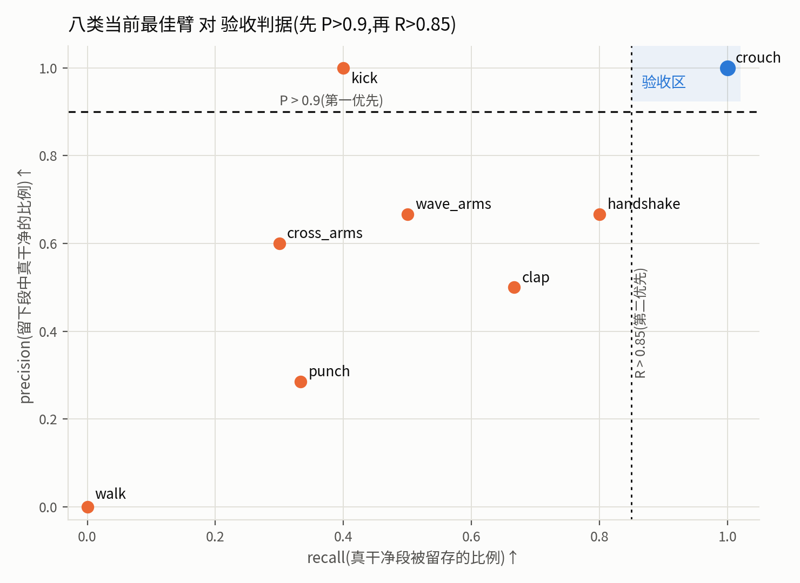

Generated from Markdown source: report/G1_MotionGPT/2026-08-20-per-action-best-vs-acceptance-criteria.md
G1 动作段判定器 — 真标签入训后的逐类最佳配置,对验收判据的现状
Preliminary。本轮把人工标注正式接进训练(含 113 段判脏备注的逐条人工判读),按类挑出 当前最佳模型,对照本日设定的验收判据(先 precision > 0.9,再 recall > 0.85)逐类记分。
更新(2026-08-21):本文两处结论已被 续篇 推翻——① punch"继续投标注大概率浪费"SUPERSEDED:病因是训练配方的 ×5 真标注过采样, 修复后学习曲线复活;② 验收判据已修订为双口径(严格重度定义)。clap / cross_arms 的 注册臂亦已被新配方臂取代。
Conclusion
MARGINAL(验收判据下 1/8 类达标;达标路径已被 kick 验证,但多数类连第一关都未过)
- crouch 达标:precision / recall / 污染剔除全部 1.000,20 段考卷零错误(主表)。
- kick 示范了正确的达标次序:precision 已 1.000,recall 0.400——它的 recall 正是靠 20 段真标签从 0.200 提上来的;字典序判据下这是最健康的中间形态。
- 其余六类 precision 差 0.23–0.61,walk 的注册臂一段不留;加真标签是全程唯一稳定有效的 干预(clap +0.21、wave_arms +0.15、kick 从全拒翻正),但每类约 20 段的量只够起步。
- 硬性推论:P > 0.9 在 20 段考卷上只有"最多容 1 段脏"的分辨率,验收必须先扩考卷 (每类 50–100 段);下一步的标签剂量曲线探针已备好待确认。
Problem and terminology
研究问题:把真实人工标注(段级判定 + 时间区间 + 逐条判读语义)接入训练后,八个动作各自的 最佳判定器离"先 P>0.9 再 R>0.85"的验收线还有多远,差距由什么构成。
| Term | 本报告 operational definition | Scope / not to confuse with |
|---|---|---|
| 验收判据 | 字典序:先 precision(留下段中真干净比例)> 0.9,达成后再要求 recall(真干净段被留存比例)> 0.85;正类 = 干净。user 2026-08-20 设定 | precision 不达标时 recall 无意义 |
| 逐条人工判读 | 113 段判脏备注逐条读原文定语义:写明区间 → 区间标脏、区间外逐步标净;"整段无效/后续无动作/方向错" → 全程标脏;"脏但没写哪里" → 只监督整段头;区间外连续剩余 ≥1 s 且语义支持 → 裁出为真实干净样本(共 82 个裁窗) | 与早前的正则批量转换相对;判读结果已写回标注库,库为唯一真源 |
| 臂 | 同一类的一种训练配置:纯工厂(只合成增广)/ 正则标签(工厂+正则转换的真标注)/ 全判读(工厂+逐条判读标注) | 逐类取考卷上最优的臂注册进 manifest |
| 考卷 | 冻结测试集(与训练材料零重叠,断言保证);walk 例外:round-1 批次 19 段(user 裁定与冻结测试集同口径等效,同池随机抽、判定先锁盘) | walk 的 39 段真标注中另 20 段(旧队列)为训练集 |
| 不过滤纯度 | 不做任何过滤时考卷中干净段占比;过滤后的 precision 必须高于它才有净收益 | 与"全拒基线"(acc 视角)互补 |
| 判定规则 | 逐 0.2 s 污染分最大值 ≥ 0.5 或整段污染分 ≥ 0.5 → 拒;阈值未逐类调参 | 操作点选择是后续达标手段之一 |
Method
本轮相对上一报告的三个变化:
| 变化 | 内容 |
|---|---|
| 真标签入训 | 训练标注库全部段级标注进入训练:判净段全 0;判脏带区间段逐步监督;判脏无区间段只监督整段头 |
| 逐条人工判读 | 113 段判脏备注人工定语义(21 段整段无效、3 段位置不明屏蔽、82 个干净裁窗);结果写回标注库结构化字段,训练器直接读库(改库前备份 .bak-2026-08-20-precuration) |
| 逐类选臂 | 每类在冻结测试集上比较三臂,按 acc 取最优(平手按 precision);注册进 manifest |
| Criterion | Threshold | Measured | Verdict |
|---|---|---|---|
| 验收(user 2026-08-20 预注册) | 先 P > 0.9,再 R > 0.85 | crouch 1.000/1.000;kick 1.000/0.400;其余 P ≤ 0.667 | 1/8 PASS |
| 过滤有净收益 | P > 不过滤纯度 | 8 类中 6 类高于(walk 注册臂无留存、punch 0.286 vs 0.300) | MARGINAL |
Run Spec 与来源声明
NOT PREREGISTERED — 本轮训练配置无单一确认版 Run Spec(逐项在会话中确认执行);
验收判据本身为 user 预注册(2026-08-20,原文见术语表)。冻结测试集有预注册抽样 spec
(outputs/g1_motiongpt/test_sets/testset_v1_spec.json,含 walk 归属的三次裁定留痕,
以 2026-08-20 最终裁定为准)。
Results
逐类当前最佳臂,考卷全量,阈值 0.5。正类 = 干净。

| 动作 | 选用臂 | 考卷(净/脏) | precision↑ | recall↑ | 污染剔除↑ | acc↑ | 不过滤纯度 | 验收 |
|---|---|---|---|---|---|---|---|---|
| crouch | 正则标签 | 6/14 | 1.000 | 1.000 | 1.000 | 1.000 | 0.300 | PASS |
| kick | 全判读 | 5/10 | 1.000 | 0.400 | 1.000 | 0.800 | 0.333 | P 过,R 差 0.45 |
| handshake | 纯工厂 | 10/10 | 0.667 | 0.800 | 0.600 | 0.700 | 0.500 | P 差 0.23 |
| wave_arms | 正则标签 | 12/8 | 0.667 | 0.500 | 0.625 | 0.550 | 0.600 | P 差 0.23 |
| clap | 正则标签 | 9/10 | 0.500 | 0.667 | 0.400 | 0.526 | 0.474 | P 差 0.40 |
| cross_arms | 纯工厂 | 10/9 | 0.600 | 0.300 | 0.778 | 0.526 | 0.526 | P 差 0.30 |
| punch | 纯工厂 | 6/14 | 0.286 | 0.333 | 0.643 | 0.550 | 0.300 | P 差 0.61 |
| walk | 纯工厂(注册) | 4/15 | 一段不留 | 0.000 | 1.000 | 0.789 | 0.211 | P 无定义 |
- 合计(八类 152 段):留 53 段,precision 0.623(不过滤 0.408)、recall 0.532、污染剔除 0.778、acc 0.678。
- walk 有一个未注册的取舍臂(工厂+旧队列 20 段真标注):precision 0.375 / recall 0.750 ——第一次让 walk 留住多数干净段,但按"acc 优先"的注册规则落选;验收判据字典序下两臂都不达标。
- 真标签的效果(同类同考卷,无真标签 → 有):clap 0.316→0.526、wave_arms 0.400→0.550、 kick 全拒→P 1.000、crouch 0.950→1.000;唯一例外 punch(0.550→0.450/0.500,两次变差)。
Analysis
- 测量:全程唯一稳定有效的干预是真标签入训(上节数字);合成增广的两次改造(抖腿细颤版、 尖峰版)与阈值扫描均未产生超出单段噪声的稳定收益,尖峰版已回滚。
- 测量:kick 展示了字典序判据下的达标路径——操作点先钉死 P(1.000),R 随标签量增长
(0.200→0.400,20 段标注)。外推斜率
待验证,即已备好的标签剂量曲线探针(25%/50%/100% 子集重训,预算约 1 小时,等确认)。 - 测量:punch 两次加标签两次变差,是唯一在所有配置下低于全拒基线的类;其失败与标签量无关, 需单独归因,继续投标注大概率浪费。
- next:①确认后跑剂量曲线;②扩考卷——认证 P>0.9 需每类 50–100 段(现 20 段只有 "容 1 段脏"的分辨率);现成缺口 kick 5 段、walk 21 段在 8443 待标。
Appendix
头条数字代入式与证据路径
- crouch:P = 6/6、R = 6/6、acc = (6+14)/20 = 1.000
- kick:P = 2/2、R = 2/5 = 0.400、acc = (2+10)/15 = 0.800
- 合计 precision = 33/53 = 0.623;recall = 33/62 = 0.532;acc = 103/152 = 0.678
- 逐类最佳与验收判定:
outputs/g1_motiongpt/zhead_best_v2_manifest.json(含各臂 checkpoint 路径) - 三臂对照全表:
outputs/g1_motiongpt/full8_testset_eval.json - 判读总档(存档,库为真源):
outputs/g1_motiongpt/fine_labels/curated_all_v1.json; 标注库备份:outputs/vadcompose_motiongpt_view/fine_annotation_train.sqlite3.bak-2026-08-20-precuration - 冻结测试集 spec(含 walk 裁定留痕):
outputs/g1_motiongpt/test_sets/testset_v1_spec.json
已知限制
- 考卷规模:每类 15–20 段,单段翻转 = 5–7 个百分点;本表所有跨臂差异中,只有超过 2 段的 变动值得当信号读。
- 82 个干净裁窗的"干净"由备注语义推断,窗口本身未经人工复看;wave_arms 的大裁窗 (10–17 s)已实测把该类推向过度保留,是判读档中最弱一环。
- kick 考卷 15/20、walk 考卷 19/40(其余未标注);handshake 训练标注为 0,其读数纯靠 合成工厂。
- 模型只判前 12 秒(编码序列上限);本批考卷的人标区间无一整段落在视野外。